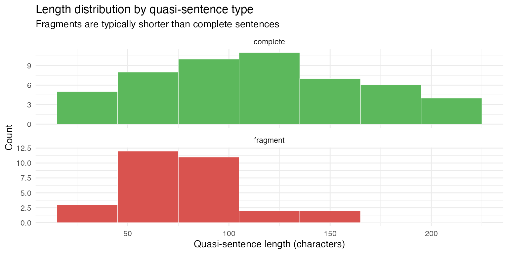

Example: Quasi-sentence segmentation
Segmenting party
manifestos using Manifesto Project rules with
qlm_segment()
example_quasi_sentences.RmdThe Manifesto Project codes party manifestos by segmenting them into quasi-sentences — the smallest units carrying a single, complete political statement. A quasi-sentence is at minimum one natural sentence, but a sentence may be split into multiple quasi-sentences when it contains two or more unique arguments. Applying these rules requires judgment: when are two clauses genuinely independent claims versus elaborations of a single point? This is exactly the kind of nuanced, instruction-following task where LLMs can serve as a scalable alternative to human coding.
This article uses qlm_segment() to apply the Manifesto
Project quasi-sentence rules to the 1972 New Zealand National Party
election manifesto, and evaluates how faithfully the model follows the
handbook instructions.
The data
The manifesto text is provided as the NZ_NP_1972
document in data_corpus_MPexamples, a two-document corpus
of Manifesto Project example texts included in quallmer.
nz_corp <- corpus_subset(data_corpus_MPexamples, country == "NZ")
cat(substr(nz_corp, 1, 500), "...\n")
#> A Guide to what the next National Government will do for New Zealand
#>
#> THE ECONOMY
#>
#> In 1972 New Zealand had, for the first time, more overseas reserves than total overseas debt. Labour has dissipated these reserves, borrowed about $200 million overseas and incurred annual interest charges mortgaging almost our total export earnings from butter and cheese.
#>
#> Inflation in 1972 was about 5 per cent, the second lowest of the Organisation for Economic Co-operation and Development (OECD) nations. Today ...The codebook
The codebook instructions are the verbatim text of section 3.2 (“Unitising — Cutting Text into Quasi-Sentences”) from the Manifesto Project coding handbook (Burst et al., 2021), including the rules for when to cut and when not to cut, the worked example, and the expected output. We load the file at runtime and append a short tail telling the model how to format its output.
qs_instructions <- paste(
readLines("data/quasi-sentences/instructions.txt"),
collapse = "\n"
)
cb_qs <- qlm_codebook(
name = "Manifesto Project quasi-sentence segmentation",
instructions = paste(
qs_instructions,
"",
"Return every quasi-sentence in document order.",
"Each returned 'text' must be verbatim text copied exactly from the input.",
"Section headers (capitalised lines without end-of-sentence punctuation)",
"should be joined to the first sentence that follows them.",
"Mark whether each quasi-sentence is a COMPLETE natural sentence or a FRAGMENT",
"cut from a larger natural sentence.",
sep = "\n"
),
schema = ellmer::type_object(
sentence_type = ellmer::type_enum(
c("complete", "fragment"),
description = paste(
"Whether this quasi-sentence is a complete natural sentence ('complete')",
"or a fragment cut from a larger natural sentence that was split ('fragment')"
)
),
reason = ellmer::type_string("Rule governing the segmentation decision.")
),
role = "You are an expert political science coder trained in the Manifesto Project methodology."
)
cb_qs
#> quallmer codebook: Manifesto Project quasi-sentence segmentation
#> Input type: text
#> Role: You are an expert political science coder trained in the Man...
#> Instructions: 3.2 Unitising - Cutting Text into Quasi-Sentences
#>
#> The codin...
#> Output schema:ellmer::TypeObject
#> Levels:
#> sentence_type: nominal
#> reason: nominalSegmenting the manifesto
segs_manifesto <- qlm_segment(
nz_corp,
codebook = cb_qs,
model = "openai/gpt-5.5",
name = "GPT 5.5"
)
saveRDS(segs_manifesto, "data/segs_manifesto_nz.rds")Results
All quasi-sentences
The model produced 81 quasi-sentences from the manifesto. The full
segmentation is shown below. Each quasi-sentence is numbered, labelled
by type (complete or fragment), and displayed
on its own line.
dv <- docvars(segs_manifesto) |>
mutate(text = as.character(segs_manifesto))
cat(sprintf("**%d.** _%s_\n> %s\n\n", dv$segid, dv$sentence_type, dv$text))1. complete > A Guide to what the next National Government will do for New Zealand
THE ECONOMY
In 1972 New Zealand had, for the first time, more overseas reserves than total overseas debt.
2. complete > Labour has dissipated these reserves, borrowed about $200 million overseas and incurred annual interest charges mortgaging almost our total export earnings from butter and cheese.
3. complete > Inflation in 1972 was about 5 per cent, the second lowest of the Organisation for Economic Co-operation and Development (OECD) nations.
4. fragment > Today it is about 15 per cent, well above the OECD average,
5. fragment > and New Zealand has an external deficit per head of population second only to Iceland.
6. complete > The first three years of the coming National Government will be very largely devoted to restoring New Zealand’s shattered economy.
7. complete > Continuous attention to economic trends and problems will replace stop-go and panic measures.
8. complete > And the taxation system will be used to give incentives for desirable economic activity.
9. complete > We will take steps to stimulate savings.
10. complete > Savings accounts, limited as to amount, will be established.
11. complete > The deposits of individuals will earn an interest rate at least equal to the annual rate of inflation thus preserving the purchasing power of savings.
12. complete > We believe that continued double-figure inflation will destroy the basis of the New Zealand economy and cause untold misery.
13. complete > The fight against increases in the cost of living is the most important single issue in economic management.
14. fragment > People without jobs represent waste of productive effort:
15. fragment > National supports a policy of full employment and the dignity of labour.
16. complete > We do not accept unemployment as a balancing factor in economic management.
17. complete > Finally, the National Development Council will be restored and consultation resumed between Government departments, academic specialists and private industry, including farming and organised labour.
18. complete > The vital role of every section of productive industry will be recognised.
19. complete > It is these moves which will put New Zealand on the way to economic recovery.
20. complete > And reduce the spiraling rate of inflation.
21. complete > SUPERANNUATION
Seldom has any policy released by an opposition party had the impact that the National Superannuation scheme has had.
22. complete > It is designed to give every New Zealander dignity and a decent income in retirement.
23. complete > Here’s how it will operate:
24. complete > Anyone who is 60 years old, or more, and who has lived in New Zealand for at least ten years will receive National Superannuation, starting next year.
25. complete > And with three big annual jumps in the rate of benefit it will be fully operating by 1978.
26. complete > To guarantee our elderly retired folk a decent minimum income, the full rate of National Superannuation, for a married couple, will be 80% of the average weekly ordinary time wage.
27. complete > It will be recalculated every six months.
28. fragment > In 1976, to start the scheme, the rate will be 65% of the average wage;
29. fragment > in 1977 it will be raised to 70%
30. fragment > and in 1978 to the full 80%.
31. complete > The rate for single persons, at all times, will be 60% of the married rate.
32. complete > The present average weekly wage is $99 and so, if there is no increase at all in wage rates in the next three years, the rates of National Superannuation will be shown in the box* below (*box not shown).
33. complete > Next year, under National, the age and universal superannuation benefits will merge to form National Superannuation.
34. fragment > At present both these benefits pay $51.26 to a married couple and $30.75 to a single person,
35. fragment > so even in the first year of National Superannuation, a married couple over 60 who have no other income will have $6.18 a week more to spend than they do now
36. fragment > and a single beneficiary will receive, after tax, $3.15 a week more than he now gets by way of age benefits, or universal superannuation.
37. complete > Of course those with other income will receive the benefit too, but they will pay more tax on their bigger incomes.
38. fragment > By 1978 a married couple will receive a net $18.06 a week more than the present age benefit or universal annuation
39. fragment > and a single person will be receiving a net $10.17 a week more.
40. complete > For the single person, that is a pay rise of more than 33%.
41. complete > The big and comforting thing about National Superannuation is that everyone gets it, just so long as they have lived in New Zealand for ten years or more and are aged 60 or over.
42. complete > They will not, nor will anyone, be expected to make special contributions over a period of years, in order to qualify.
43. fragment > The scheme is financed out of ordinary taxation so there is nothing to be deducted from wages;
44. fragment > no special payments of any kind.
45. complete > This means that the present age beneficiary will receive National Superannuation next year.
46. complete > So will the retired Government servant, in addition to the pension from the Government superannuation fund which he had paid for.
47. complete > And so will all the people who are drawing pensions from company and other private superannuation schemes.
48. complete > In recent weeks, the Government has been making moves to compensate for the weaknesses revealed in their own scheme, when compared with National’s.
49. complete > But the fact remains that National’s is the only superannuation scheme that offers a fair deal to everyone in their years of retirement.
50. complete > WOMEN’S RIGHTS
Since 1975 is International Women’s Year, it can be expected that all political parties will talk a great deal about their ‘women’s policies’.
51. complete > Unfortunately most will be little more than window dressing.
52. complete > National’s plans go far beyond this.
53. fragment > We will begin by introducing legislation to remove existing legal discrimination relating to women,
54. fragment > and to prohibit discrimination against any person by reason of sex.
55. fragment > We will also establish a Human Rights Commission which will ensure that equal rights legislation is enforced
56. fragment > and that women have an effective and inexpensive means of redress.
57. fragment > The Commission will investigate cases of discrimination presented to it
58. fragment > and recommend civil action to the Attorney-General.
59. complete > Full consideration will be given to the recommendations of the Select Committee on Women’s Rights.
60. complete > We will set priorities for implementation, in consultation with women’s organisations.
61. fragment > We will legislate to ensure that all areas of discrimination in employment are removed
62. fragment > and that merit is the sole criterion in respect of job applications, selection and promotion.
63. complete > To encourage women who wish to enter, return to or remain in employment, National will encourage employers to establish flexible working patterns, such as glide time, part-time, job sharing, and multi-shift work.
64. complete > Thus assisting women who undertake the dual role of worker and mother.
65. fragment > We will give special attention to the problems associated with re-entry to the work force
66. fragment > and ensure that greater job retraining opportunities are available.
67. complete > Maternity leave without pay will be available to women for a period of up to 12 weeks, without loss of job security, promotion or superannuation rights, providing this does not cause undue disruption to a business enterprise.
68. fragment > The new National Government will appoint women to boards, commissions and tribunals
69. fragment > and will give consideration to the appointment of women as industrial mediators.
70. fragment > We will also support increased participation of women in the judicial system
71. fragment > and recognise no sex barriers in the exercise of any judicial office.
72. complete > Suitably qualified women will be given exactly the same consideration as men.
73. complete > National will ensure that early childhood education is generally available, where feasible, as an integral part of the education system.
74. complete > Priority will be given to such areas as new housing suburbs and regenerated inner city areas.
75. complete > Financial assistance will be provided through approved voluntary agencies to establish centres for those children who need day care but whose parents cannot afford to pay the full cost.
76. fragment > National will also promote and encourage job training and retraining, “second chance” education
77. fragment > and promote a policy of life-long education for women.
78. complete > We will tackle the problems women face with housing.
79. complete > Under National the Housing Corporation will not differentiate between men and women borrowers on grounds of sex.
80. complete > We will introduce a flexible principal repayment plan to meet those cases where the wife works, leaves the work force to raise a family and then returns to work.
81. complete > The National Party believes all women must have the opportunity to participate on the basis of full equality in the social, cultural, economic and political spheres of New Zealand society.
Complete sentences versus fragments
Quasi-sentences labelled fragment were cut from a
natural sentence that contained more than one unique argument. The split
rate provides a rough calibration check: a very low rate suggests the
model is treating every sentence as a single unit; a very high rate
suggests over-splitting.
dv |>
count(sentence_type) |>
mutate(pct = round(100 * n / sum(n), 1)) |>
knitr::kable(
col.names = c("Sentence type", "Count", "%"),
caption = "Quasi-sentence types"
)| Sentence type | Count | % |
|---|---|---|
| complete | 51 | 63 |
| fragment | 30 | 37 |
As an additional sanity check, fragments cut from natural sentences should tend to be shorter than complete sentences. The distribution of segment lengths (in characters) confirms this pattern:
dv |>
mutate(
nchar = nchar(text),
sentence_type = factor(sentence_type, levels = c("complete", "fragment"))
) |>
ggplot(aes(x = nchar, fill = sentence_type)) +
geom_histogram(binwidth = 30, colour = "white", linewidth = 0.2) +
facet_wrap(~sentence_type, ncol = 1, scales = "free_y") +
scale_fill_manual(values = c(complete = "#5cb85c", fragment = "#d9534f"), guide = "none") +
labs(
x = "Quasi-sentence length (characters)",
y = "Count",
title = "Length distribution by quasi-sentence type",
subtitle = "Fragments are typically shorter than complete sentences"
) +
theme_minimal()
Coding decisions: why sentences were split
The table below shows every quasi-sentence the model labelled as a
fragment — a piece cut from a natural sentence that
contained more than one unique argument — together with the preceding
quasi-sentence for context and the model’s cited reason for the split.
These are the cases most worth human review: each fragment should
represent a genuinely distinct political claim.
fragment_ids <- which(dv$sentence_type == "fragment")
pred_ids <- pmax(1L, fragment_ids - 1L)
pair_rows <- sort(unique(c(pred_ids, fragment_ids)))
dv[pair_rows, ] |>
mutate(
role = if_else(sentence_type == "fragment", "fragment", "predecessor"),
reason = if_else(sentence_type == "fragment", reason, "")
) |>
select(segid, role, reason, text) |>
knitr::kable(
col.names = c("Seg.", "Role", "Reason", "Text"),
caption = "Split decisions: fragments and the model's cited reason"
)| Seg. | Role | Reason | Text | |
|---|---|---|---|---|
| 3 | 3 | predecessor | Inflation in 1972 was about 5 per cent, the second lowest of the Organisation for Economic Co-operation and Development (OECD) nations. | |
| 4 | 4 | fragment | The natural sentence contains two distinct economic indicators; this fragment states the current inflation level. | Today it is about 15 per cent, well above the OECD average, |
| 5 | 5 | fragment | Split from the preceding clause because it states a separate economic indicator, the external deficit. | and New Zealand has an external deficit per head of population second only to Iceland. |
| 13 | 13 | predecessor | The fight against increases in the cost of living is the most important single issue in economic management. | |
| 14 | 14 | fragment | Colon separates a distinct evaluative statement about unemployment from the following policy position. | People without jobs represent waste of productive effort: |
| 15 | 15 | fragment | Split from the preceding evaluative clause; this fragment gives the policy position. | National supports a policy of full employment and the dignity of labour. |
| 27 | 27 | predecessor | It will be recalculated every six months. | |
| 28 | 28 | fragment | Semicolon-separated schedule contains distinct annual rate statements; this fragment states the 1976 rate. | In 1976, to start the scheme, the rate will be 65% of the average wage; |
| 29 | 29 | fragment | Split from the same natural sentence because it states a separate 1977 rate. | in 1977 it will be raised to 70% |
| 30 | 30 | fragment | Split from the same natural sentence because it states a separate 1978 rate. | and in 1978 to the full 80%. |
| 33 | 33 | predecessor | Next year, under National, the age and universal superannuation benefits will merge to form National Superannuation. | |
| 34 | 34 | fragment | The natural sentence combines a current-benefit comparison with future gains; this fragment gives the current benefit levels. | At present both these benefits pay $51.26 to a married couple and $30.75 to a single person, |
| 35 | 35 | fragment | Split because this clause states a distinct gain for married couples. | so even in the first year of National Superannuation, a married couple over 60 who have no other income will have $6.18 a week more to spend than they do now |
| 36 | 36 | fragment | Split because this clause states a distinct gain for single beneficiaries. | and a single beneficiary will receive, after tax, $3.15 a week more than he now gets by way of age benefits, or universal superannuation. |
| 37 | 37 | predecessor | Of course those with other income will receive the benefit too, but they will pay more tax on their bigger incomes. | |
| 38 | 38 | fragment | The natural sentence contains distinct benefit-gain statements for married and single recipients; this fragment gives the married-couple gain. | By 1978 a married couple will receive a net $18.06 a week more than the present age benefit or universal annuation |
| 39 | 39 | fragment | Split from the same sentence because it gives a distinct single-person gain. | and a single person will be receiving a net $10.17 a week more. |
| 42 | 42 | predecessor | They will not, nor will anyone, be expected to make special contributions over a period of years, in order to qualify. | |
| 43 | 43 | fragment | Semicolon separates two related financing statements; this fragment states ordinary-tax financing and no wage deduction. | The scheme is financed out of ordinary taxation so there is nothing to be deducted from wages; |
| 44 | 44 | fragment | Split from the semicolon-separated sentence because it states the absence of special payments. | no special payments of any kind. |
| 52 | 52 | predecessor | National’s plans go far beyond this. | |
| 53 | 53 | fragment | The sentence contains two distinct legislative aims; this fragment states removal of existing legal discrimination. | We will begin by introducing legislation to remove existing legal discrimination relating to women, |
| 54 | 54 | fragment | Split from the same sentence because it states a separate anti-discrimination aim. | and to prohibit discrimination against any person by reason of sex. |
| 55 | 55 | fragment | The sentence contains distinct functions of the proposed commission; this fragment states enforcement of equal-rights legislation. | We will also establish a Human Rights Commission which will ensure that equal rights legislation is enforced |
| 56 | 56 | fragment | Split from the same sentence because it states a separate redress function. | and that women have an effective and inexpensive means of redress. |
| 57 | 57 | fragment | The sentence lists distinct commission functions; this fragment states investigation of discrimination cases. | The Commission will investigate cases of discrimination presented to it |
| 58 | 58 | fragment | Split from the same sentence because it states a separate function of recommending civil action. | and recommend civil action to the Attorney-General. |
| 60 | 60 | predecessor | We will set priorities for implementation, in consultation with women’s organisations. | |
| 61 | 61 | fragment | The sentence contains two distinct employment-equality aims; this fragment states removal of discrimination. | We will legislate to ensure that all areas of discrimination in employment are removed |
| 62 | 62 | fragment | Split from the same sentence because it states a separate merit-based employment criterion. | and that merit is the sole criterion in respect of job applications, selection and promotion. |
| 64 | 64 | predecessor | Thus assisting women who undertake the dual role of worker and mother. | |
| 65 | 65 | fragment | The sentence contains two distinct labour-market support commitments; this fragment states attention to re-entry problems. | We will give special attention to the problems associated with re-entry to the work force |
| 66 | 66 | fragment | Split from the same sentence because it states a separate commitment to retraining opportunities. | and ensure that greater job retraining opportunities are available. |
| 67 | 67 | predecessor | Maternity leave without pay will be available to women for a period of up to 12 weeks, without loss of job security, promotion or superannuation rights, providing this does not cause undue disruption to a business enterprise. | |
| 68 | 68 | fragment | The sentence contains two distinct representation commitments; this fragment states appointments to boards, commissions and tribunals. | The new National Government will appoint women to boards, commissions and tribunals |
| 69 | 69 | fragment | Split from the same sentence because it states a separate appointment consideration. | and will give consideration to the appointment of women as industrial mediators. |
| 70 | 70 | fragment | The sentence contains two distinct judicial-equality commitments; this fragment states support for women’s participation in the judicial system. | We will also support increased participation of women in the judicial system |
| 71 | 71 | fragment | Split from the same sentence because it states a separate no-sex-barriers commitment. | and recognise no sex barriers in the exercise of any judicial office. |
| 75 | 75 | predecessor | Financial assistance will be provided through approved voluntary agencies to establish centres for those children who need day care but whose parents cannot afford to pay the full cost. | |
| 76 | 76 | fragment | The sentence contains distinct education/training commitments; this fragment states training, retraining, and second-chance education. | National will also promote and encourage job training and retraining, “second chance” education |
| 77 | 77 | fragment | Split from the same sentence because it states a separate lifelong-education policy. | and promote a policy of life-long education for women. |
Coding decisions: near-cuts kept whole
Equally important are sentences the model could have split but correctly kept whole, applying the handbook’s “when not to cut” rules. The manifesto contains several sentences with conjunctions or listed items that look splittable at first glance but express a single argument. Here are a handful of representative cases where the model’s reason shows it considered and rejected a split:
near_cuts <- dv |>
filter(
sentence_type == "complete",
grepl("\\band\\b|\\bor\\b", text),
grepl(
"single|elaborat|same|one (argument|claim|message|statement)|not.+(split|separate|unique|warrant)",
reason, ignore.case = TRUE
)
) |>
slice_head(n = 5)
near_cuts |>
select(segid, reason, text) |>
knitr::kable(
col.names = c("Seg.", "Reason", "Text"),
caption = "Near-cut decisions: sentences kept whole despite apparent complexity"
)| Seg. | Reason | Text |
|---|---|---|
| 2 | Single sentence presenting one criticism of Labour’s economic management. | Labour has dissipated these reserves, borrowed about $200 million overseas and incurred annual interest charges mortgaging almost our total export earnings from butter and cheese. |
| 3 | Single sentence with one statement about past inflation. | Inflation in 1972 was about 5 per cent, the second lowest of the Organisation for Economic Co-operation and Development (OECD) nations. |
| 7 | Single sentence with one statement about economic management. | Continuous attention to economic trends and problems will replace stop-go and panic measures. |
| 12 | Single sentence with one argument about the harmful effects of inflation. | We believe that continued double-figure inflation will destroy the basis of the New Zealand economy and cause untold misery. |
| 17 | Single sentence with one institutional consultation policy. | Finally, the National Development Council will be restored and consultation resumed between Government departments, academic specialists and private industry, including farming and organised labour. |
Inter-coder reliability of segmentation
How well does the LLM segmentation agree with the human gold
standard? The data_corpus_MPexamplesseg object provides the
Manifesto Project’s human coding as a ready-to-use segmented corpus. We
can compare it directly against the LLM output with
qlm_compare(), which computes Krippendorff’s
_u_α for unitizing — the standard reliability measure for
segmented text (Krippendorff, 2019, section 12.6).
Preparing the gold standard
The data_corpus_MPexamplesseg object contains the
Manifesto Project’s human-coded quasi-sentences for both example
manifestos, already converted to a segmented corpus. We subset to the NZ
document.
gold_corp <- corpus_subset(data_corpus_MPexamplesseg, docid == "NZ_NP_1972")
gold_corp
#> Corpus consisting of 71 documents and 7 docvars.
#> NZ_NP_1972.1 :
#> "A Guide to what the next National Government will do for New..."
#>
#> NZ_NP_1972.2 :
#> "Labour has dissipated these reserves, borrowed about $200 mi..."
#>
#> NZ_NP_1972.3 :
#> "Inflation in 1972 was about 5 per cent, the second lowest of..."
#>
#> NZ_NP_1972.4 :
#> "Today it is about 15 per cent, well above the OECD average,"
#>
#> NZ_NP_1972.5 :
#> "and New Zealand has an external deficit per head of populati..."
#>
#> NZ_NP_1972.6 :
#> "The first three years of the coming National Government will..."
#>
#> [ reached max_ndoc ... 65 more documents ]Comparing the segmentations
qlm_compare() detects that both inputs are segmented
corpora and computes Krippendorff’s _u_α for unitizing —
the standard reliability measure for segmented text. Since
segs_manifesto was produced by qlm_segment(),
it already carries the character-level positions and metadata that
qlm_compare() needs.
qlm_compare(segs_manifesto, gold_corp)
#>
#> ── Inter-rater reliability ──
#>
#> Subjects: 1
#> Raters: 2
#>
#> ── (boundaries) (unitizing)
#> Krippendorff's alpha (unitizing, binary) [NZ_NP_1972] 0.9414
#> Krippendorff's alpha (unitizing, binary) [(overall)] 0.9414
#> Conclusion
qlm_segment() applies the Manifesto Project
quasi-sentence rules to a raw manifesto, producing a quanteda corpus in
which each document is a single political statement. The
reason docvar makes it possible to audit both split and
non-split decisions against the handbook rules. The segmented output can
be compared to a human gold standard via qlm_compare(),
which computes Krippendorff’s _u_α for unitizing —
measuring boundary agreement at the character level. The segmented
corpus can also feed directly into qlm_code() for
domain-level coding, reproducing the full Manifesto Project pipeline
within a single R workflow.
References
Burst, T., Krause, W., Lehmann, P., Lewandowski, J., Matthieß, T., Merz, N., Regel, S., Zehnter, L. (2021). Manifesto Corpus. Version: South America 2021b. Berlin: WZB Berlin Social Science Center.
Volkens, A., Burst, T., Krause, W., Lehmann, P., Matthieß, T., Merz, N., Regel, S., Weßels, B., Zehnter, L. (2021). The Manifesto Data Collection. Manifesto Project (MRG/CMP/MARPOR). Version 2021b. Berlin: WZB Berlin Social Science Center. https://doi.org/10.25522/manifesto.mpds.2021b